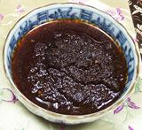

 |
Black Bean Chili SauceChina - Hunan / Sichuan | ||||
| Makes: Effort: Sched: DoAhead: |
1/3 cup ** 1 hr Best |
Sauces made from fermented black beans are used all over China, but this style is popular in the south, where chilis are taken seriously. Commercial versions are also available. In some versions the beans are only lightly crushed. | |||
|
|
1-1/2 3 3 4 2 2 1/2 |
T cl T T t t t |
Black Beans (1) Garlic Chili Flake (2) Oil Rice Wine Sesame Oil Salt |
Make - (1 hr - 10 min work)
|